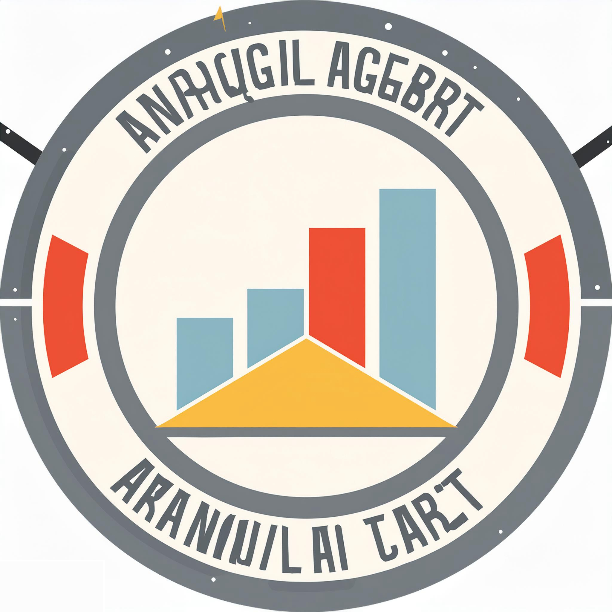

<!-- 
    Represents a toolbar component for the application.
    It includes a logo, a menu button to toggle a sidebar, and buttons for view mode and settings.
-->

<mat-toolbar>
    <!-- Header border container -->
    <div class="header-border">

        <!-- Empty space -->
        <div style="width: 25px;"></div>

        <!-- Logo -->
        

        <!-- Menu button -->
        <button tuiButton type="button" appearance="flat" (click)="toggle(true)" (tuiActiveZoneChange)="toggle($event)">
            <!-- Menu icon -->
            <mat-icon class="menu-icon" fontIcon="menu"></mat-icon>

            <!-- Sidebar directive -->
            <div *tuiSidebar="open; direction: 'right'">
                <!-- Accordion container -->
                <tui-accordion [rounded]="false">

                    <!-- Accordion item for back button -->
                    <tui-accordion-item [showArrow]="false">

                        <!-- Content header row -->
                        <div class="content-header-row">
                            <!-- Back button -->
                            <button tuiButton type="button" appearance="flat" (click)="toggle(false)"
                                (tuiActiveZoneChange)="toggle($event)">
                                <!-- Back icon -->
                                <mat-icon class="arrow-back-icon" fontIcon="arrow_back"></mat-icon>
                            </button>

                            <!-- Logo -->
                            

                            <!-- Empty space -->
                            <div style="width: 25px;"></div>
                        </div>
                    </tui-accordion-item>

                    <!-- Accordion item for view mode -->
                    <tui-accordion-item [showArrow]="false" borders="top-bottom">
                        <!-- View mode button -->
                        <button appearance='flat' tuiButton type="submit" class="tui-space_right-3 tui-space_bottom-3"
                            (click)="changeViewModeActiveMode()" [routerLink]="['view-mode']">
                            <!-- View mode text -->
                            <span class="view-mode-span" [style.color]="isViewModeActive ? '#12052e' : '#949494'">
                                View Mode
                            </span>
                        </button>
                    </tui-accordion-item>

                    <!-- Accordion item for settings -->
                    <tui-accordion-item [showArrow]="false" borders="top-bottom">
                        <!-- Settings button -->
                        <button appearance='flat' tuiButton type="submit" class="tui-space_right-3 tui-space_bottom-3"
                            (click)="changeSettingsActiveMode()" [routerLink]="['settings']">
                            <!-- Settings text -->
                            <span [style.color]="isSettingsActive ? '#12052e' : '#949494'">
                                Settings
                            </span>
                        </button>
                    </tui-accordion-item>
                </tui-accordion>
            </div>
        </button>
    </div>

</mat-toolbar>